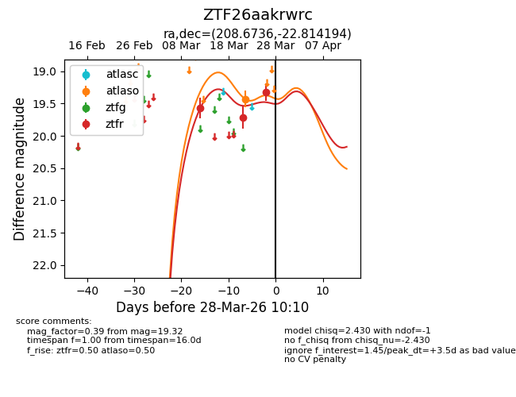
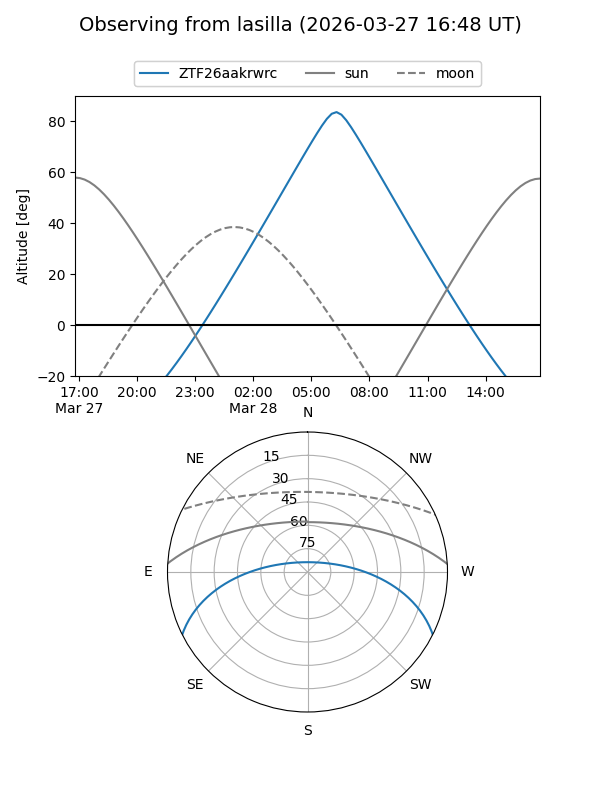
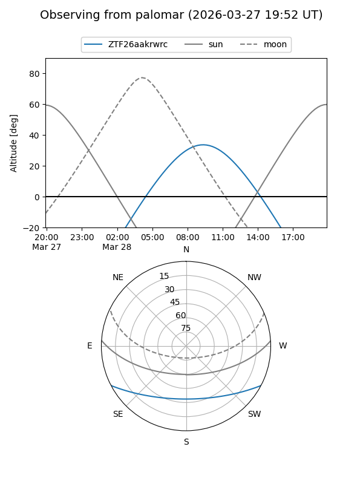
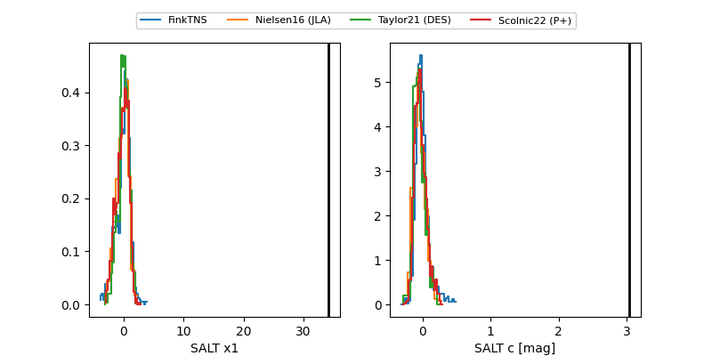

ZTF26aakrwrc
Target ZTF26aakrwrc at 2026-03-28 10:13
Aliases and brokers:
FINK: link
Lasair: link
ALeRCE: link
alt names
ZTF26aakrwrc (ztf,fink_ztf)
Coordinates:
equatorial (ra, dec) = 208.6736,-22.81419
equatorial (HMS+DMS) = 13:54:41.66,-22:48:51.10
galactic (l, b) = (321.4609,+37.77098)
Flags:
Photometry:
last atlaso=19.43, ztfr=19.32
1 atlaso, 3 ztfr detections
Lightcurve

Visibility


Additional plots
